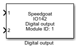

IO142 - Digital Output
IO142 - Digital Output —
Writes the IO142 digital outputs
Library
Simulink Real-Time - Speedgoat

Description
Your model can only contain one of these blocks for each I/O module in your target
machine.
Ports
This driver block has n double-type scalar input ports, where n is the number of
selected digital output channels.
Inputs
-
X (X is the digital output channel number)
Use the following values to set digital output channel X:
Data Type:
double
Parameters
The configuration details are all defined in the Setup block.
-
Module ID
This ID defines the link to the corresponding Setup block
-
Sample Time
Defines the base sample time at which this driver block gets its sample hit. This
parameter can also be set to -1 for inherited
sample time. The units are in seconds.